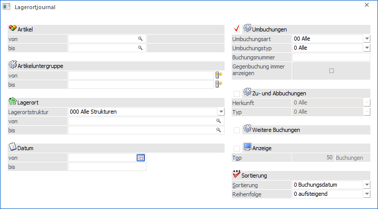
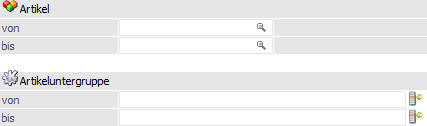
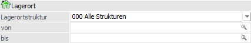
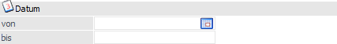
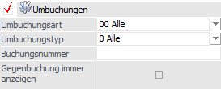
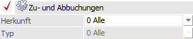
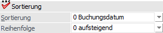
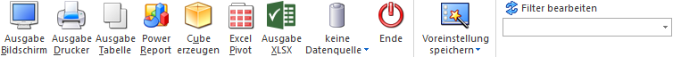

Im Lagerortjournal, welches über den Menüpunkt…
1 WinLine FAKT
1 Auswertungen
1 Lagerorte
1 Lagerortjournal
… aufgerufen wird, können alle erfassten Lagerortbuchungen angezeigt werden.
Hinweis
Der in der Auswertung ebenfalls dargestellte Lagerortwert wird immer zur Laufzeit berechnet (Bestand x aktueller Einstandspreis).

Artikelselektion

Im Bereich der Selektion kann die Ausgabe eingeschränkt werden.
Ø Artikel von / bis
An dieser Stelle kann nach den Artikeln eingeschränkt werden, welche ausgewertet werden sollen. Bleiben die Felder leer so werden alle Artikel in die Auswertung einbezogen.
Hinweis
Wird im Feld "Artikel von / bis" z.B. nur eine Artikelnummer eingegeben und dieser Artikel hat auch noch Ausprägungen, so werden alle Ausprägungen automatisch berücksichtigt.
Ø Artikeluntergruppe
In diesen Feldern kann nach den Artikeluntergruppen eingeschränkt werden, welche im Journal berücksichtigt werden sollen.
Lagerorte

In diesem Bereich können die auszuwertenden Lagerorte selektiert werden.
Ø Lagerortstruktur
In dem Feld "Lagerortstruktur" kann mit Hilfe einer Auswahlliste die auszuwertende Struktur gewählt werden. Durch Auswahl einer Struktur steht der auszuwertende Lagerortbereich fest und die nachfolgenden Felder ("Lagerort von / bis") stehen für eine Eingabe nicht zur Verfügung.
Ø Lagerort von / bis
An dieser Stelle können der auszuwertende Lagerort bzw. der Lagerortbereich über eine "von / bis"-Selektion angegeben werden.
Hinweis
Wird in dem Feld "von Lagerort" ein Ort angegeben, welcher nicht der letzten Hierarchie-Ebene entspricht, so wird in das Feld "bis Lagerort" automatisch der letzte Lagerort der darunterliegenden Hierarchie-Ebenen eingetragen.
Datum

Ø Datum von / bis
In den Feldern kann der Datumsbereich (aufgrund des Buchungsdatums) eingegrenzt werden, für welchen das Journal ausgegeben werden soll.
Umbuchungen

Sobald die Option "Umbuchungen" aktiviert wird, werden die getätigten Umbuchungen bei der Ausgabe berücksichtigt. Zusätzlich stehen die nachfolgenden Felder für eine Verfeinerung der Selektion zur Verfügung.
Hinweis
Die hier getätigten Einstellungen werden benutzerspezifisch gespeichert (Ausnahme "Buchungsnummer").
Ø Umbuchungsart
An dieser Stelle kann eine Eingrenzung aufgrund der Umbuchungsart vorgenommen werden.
Ø Umbuchungstyp
In dem Feld "Umbuchungstyp" kann der Typ der Umbuchung gewählt werden. Hiermit sind die unterschiedlichen Register des Programms Lagerorte - Umbuchung, sowie das EXIM des Lagerbuchungs-EXIMs gemeint. Zur Verfügung stehen somit die folgenden Einträge:
ü 0 - Alle
ü 1 - Umbuchungen
ü 2 - Belege
ü 3 - Produktionsaufträge
ü 4 - Merkliste
ü 5 - EXIM
Ø Buchungsnummer
Hier kann eine Buchungsnummer angegeben werden, welche ausgewertet werden soll. Ob eine Buchungsnummer während der Umbuchung vergeben wird ist abhängig von der verwendeten Umbuchungsart (Feld "Nummernkreis" des Stammdatenfensters "Umbuchungsarten").
Hinweis
Durch Eingabe des %-Zeichens erfolgt eine sogenannte "Wie"-Suche.
Beispiel
Bei der Eingabe von "UM-26%" werden all jene Journalzeilen ausgegeben, bei welchen die Buchungsnummer mit "UM-26" beginnt und irgendwie endet (d.h. auch "UM-261", "UM-26542", etc. werden berücksichtigt).
Ø Gegenbuchung immer anzeigen
Sobald eine Lagerortselektion (Felder "Lagerort von / bis") vorgenommen wurde, kann die Option "Gegenbuchungen immer anzeigen" aktiviert werden. Hierdurch werden bei Umbuchungen immer beide Orte ausgegeben, auch wenn einer der Orte gemäß Lagerortselektion nicht ausgegeben werden dürfte.
Zu- und Abbuchen

Sobald die Option "Zu- und Abbuchungen" aktiviert wird, werden die getätigten Zu- und Abbuchungen bei der Ausgabe berücksichtigt. Zusätzlich stehen die nachfolgenden Felder für eine Verfeinerung der Selektion zur Verfügung.
Hinweis
Die hier getätigten Einstellungen werden benutzerspezifisch gespeichert.
Ø Herkunft
An dieser Stelle kann definiert werden, aus dem Bereich der WinLine FAKT bzw. der WinLine PPS die auszugebenden Buchungen stammen sollen. Folgende Varianten stehen zur Verfügung:
ü 0 - Alle
ü 1 - Lagerbuchhaltung
ü 2 - Belegerfassung
ü 3 - Produktion
ü 4 - Inventur
ü 5 - Fertigungsstückliste
Ø Typ
Sobald unter Herkunft eine Auswahl ungleich "0 - Alle" getroffen wurde, kann hier der Typ der Buchung selektiert werden. Die zur Verfügung stehenden Varianten sind dabei abhängig von der gewählten Herkunft:
ü Herkunft "Lagerbuchhaltung"
Es
kann aus "0 - Alle", "1 - Lagerbuchhaltung" (auch "manuelle Lagerbuchhaltung"
genannt) und "2 - externe Lagerbuchhaltung" gewählt werden.
ü Herkunft "Belegerfassung"
Es
kann aus "0 - Alle", "1 - Verkauf" und "2 - Einkauf" gewählt werden.
ü Herkunft "Produktion"
Es kann
aus "0 - Alle", "1 - Produktionsabgang" und "2 - Produktionszugang" gewählt
werden.
ü Herkunft "Inventur"
Es stehen
keine Typen zur Auswahl.
ü Herkunft
"Fertigungsstückliste"
Es kann aus "0 - Alle", "1 - Fertigung", "2 -
Materialverbrauch" und "3 - Sonstiges" gewählt werden.
Weitere Buchungen
Sobald die Option "Weitere Buchungen" aktiviert wird, werden all jene Journalzeilen bei der Ausgabe berücksichtigt, bei denen Detailinformationen (z.B. aus dem Artikeljournal) nicht zur Verfügung stehen.
Hinweis
Die Auswahl wird benutzerspezifisch gespeichert.
Anzeige
Die hier getätigten Einstellungen werden benutzerspezifisch gespeichert.
Ø Top x Buchungen
Durch Aktivierung der Option "Anzeige" kann die Ausgabe auf die Top x Buchungen eingeschränkt werden. Das "Top" ergibt sich hierbei aus der Sortierung.
Sortierung

Die hier getätigten Einstellungen werden benutzerspezifisch gespeichert.
Ø Sortierung
Hier kann die Sortierung der Ausgabe definiert werden. Es stehen die folgenden Einstellungen zur Verfügung:
ü 0 - Buchungsdatum
ü 1 - Artikel
ü 2 - Lagerort
ü 3 - Erfassungsreihenfolge
Ø Reihenfolge
An dieser Stelle kann definiert werden, ob die Sortierung "0 - aufsteigend" oder "1 - absteigend" erfolgen soll.
Buttons

Ø Ausgabe Bildschirm
Mit Hilfe des Buttons "Ausgabe Bildschirm" oder der Taste F5 wird die Auswertung am Bildschirm ausgegeben.
Ø Ausgabe Drucker
Durch Anwahl des Buttons "Ausgabe Drucker" wird die Auswertung am Drucker ausgegeben.
Ø Ausgabe Tabelle
Bei der Anwahl des Buttons "Ausgabe Tabelle" wird das Journal in Form einer WinLine Tabelle dargestellt (nähere Informationen entnehmen Sie bitte dem Kapitel Lagerortjournal Tabelle).
Ø Power Report
Durch Drücken des Buttons "Power Report" wird die Auswertung auf Basis einer Datenquelle grafisch dargestellt. Die Ausgabe ist individuell anpassbar und erfolgt in der Form von "Widgets", die unterschiedlichste Darstellungen ermöglichen.
Ø Cube erzeugen
Wenn die Option "Cube erzeugen" gewählt wird (nur möglich, wenn auch die entsprechende Lizenz dafür vorhanden ist), dann wird das Lagerortjournal im "Olap Viewer" angezeigt. In diesem können die Daten nach verschiedenen Gesichtspunkten ausgewertet werden.
Ø Excel Pivot
Durch Anwahl des Buttons "Excel Pivot" wird die Auswertung in Form einer Pivot Ausgabe in Microsoft Excel (2007 oder höher) angezeigt.
Ø Ausgabe XLSX
Mit Hilfe des Buttons "Ausgabe XLSX" wird das Lagerortjournal an Microsoft Excel übergeben.
Ø Datenquelle
Mit Hilfe dieser Auswahl kann definiert werden, ob und wie eine Datenquelle (d.h. ein Snapshot oder eine MasterView) verwendet werden soll.
ü Keine Datenquelle
Bei Auswahl
von "keine Datenquelle" wird keine zuvor angelegte Datenquelle genutzt. D.h. die
Daten werden von der WinLine "live" ermittelt und in der gewünschten Form
ausgegeben.
Hinweis
Da die BI-Ausgabe (z.B. Cube oder Power Report) immer eine Datenquelle benötigt, wird im Hintergrund eine temporäre Datenquelle (Snapshot) gebildet.
ü Datenquelle
erstellen/aktualisieren
Die Daten werden zur Laufzeit ermittelt und an einen
zu definierenden Snapshot übergeben. Nach dem Füllen der Datenquelle wird die
gewünschte Ausgabevariante über die Datenquelle erzeugt. Dieser Vorgang kann mit
einer Zeitverzögerung verbunden sein, da die Daten zusätzlich gespeichert werden
müssen.
ü Datenquelle verwenden
Bei der
Verwendung eines Snapshots werden die Daten direkt aus der Datenquelle gelesen,
d.h. die für die Ausgabe benötigten Daten können ohne Verzögerung in der
gewünschten Variante ausgegeben werden.
Wird hingegen eine MasterView
gewählt, so werden die Daten für die Ausgabe "live" ermittelt, wobei diese so
aktuell sind wie die zugrunde liegenden Datenquellen.
Hinweis
Der Button "Datenquelle verwenden" wird nur angeboten, wenn für diesen Bereich (bezogen auf den aktuellen Benutzer / Mandanten) zumindest eine private oder öffentliche Datenquelle existiert.
Hinweis
Weitere Informationen zum Thema "Datenquellen" entnehmen Sie bitte dem Kapitel "Die Datenquelle".
Ø Ende
Durch Drücken des Buttons "Ende" bzw. der Taste ESC wird das Fenster geschlossen.
Ø Voreinstellung speichern
Durch Anwahl dieses Buttons erfolgt eine benutzerspezifische Speicherung aller im Fenster getätigten Einstellungen. Diese sogenannten "Voreinstellungen" können jederzeit wieder abgerufen werden und ermöglichen dadurch ein schnelleres und zielorientierteres Arbeiten (nähere Informationen entnehmen Sie bitte dem Kapitel "Die Voreinstellungen").
Ø Filter bearbeiten
Durch Anklicken des Buttons "Filter bearbeiten" kann das Lagerortjournal nach frei definierbaren Kriterien eingeschränkt werden.